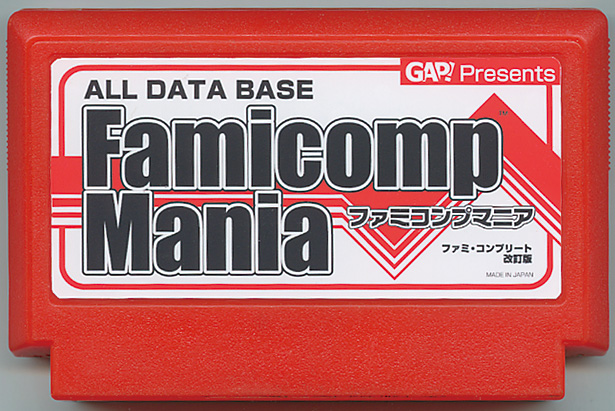

「 Famicomp Mania ファミ・コンプリート改訂版 」
後藤将之／編集者
全カセット・ディスクタイトル、および周辺機器・本体のデータを収録したカタログユーティリティ「ファミ・コンプリート」の改訂版が2010年登場予定です。2003年に発売された前作より様々な面をリニューアル、さらに珍しい特殊カセット・周辺機器、付属品などの情報も大幅に追加。豊富な写真資料をはじめ、より資料性・検索性を高めたファミコンデータベースの決定版となります。 ※皆さんの応援で、実現するかもしれません。